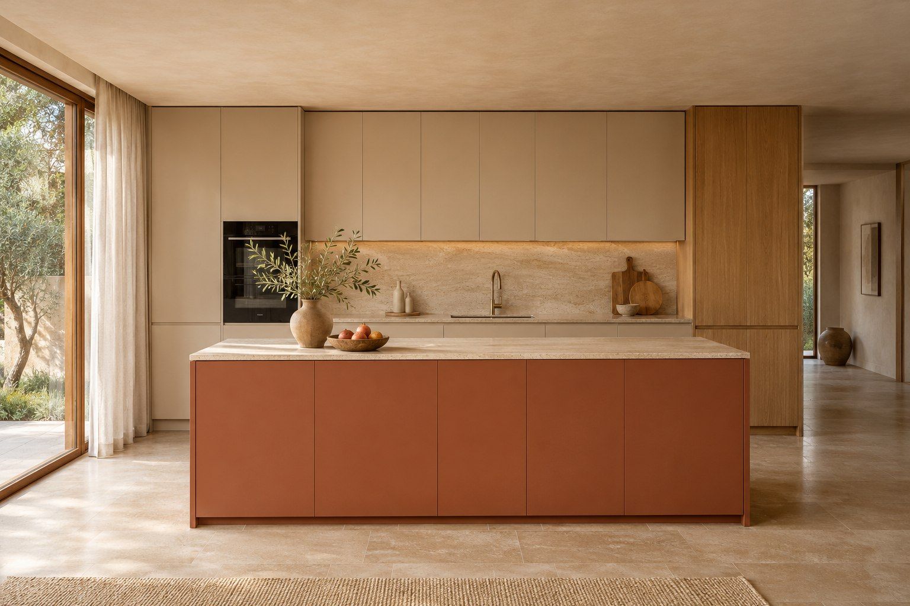

Кухня с островом «Терра»
С отдельным островом

Основной ряд шкафов располагается вдоль стены, а остров служит для подготовки продуктов, сервировки или хранения. Возможность встроить технику в остров зависит от коммуникаций и ширины проходов.
Характеристики
- Конфигурация
- С отдельным островом
Возможные материалы
- ЛДСП для корпусов
- МДФ или фасады с древесной фактурой
- Столешница из искусственного камня или HPL
Преимущества
- Отдельная рабочая поверхность
- Подходит для кухни-гостиной